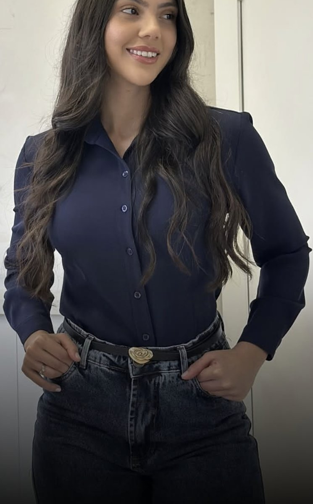
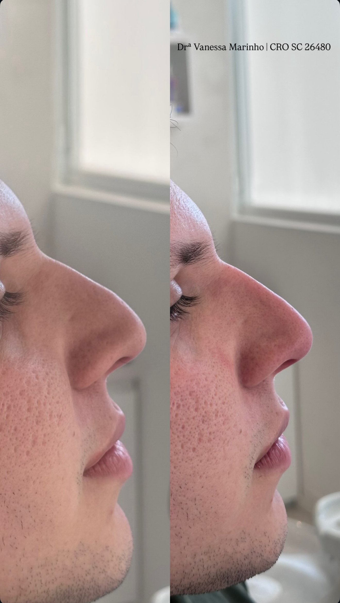
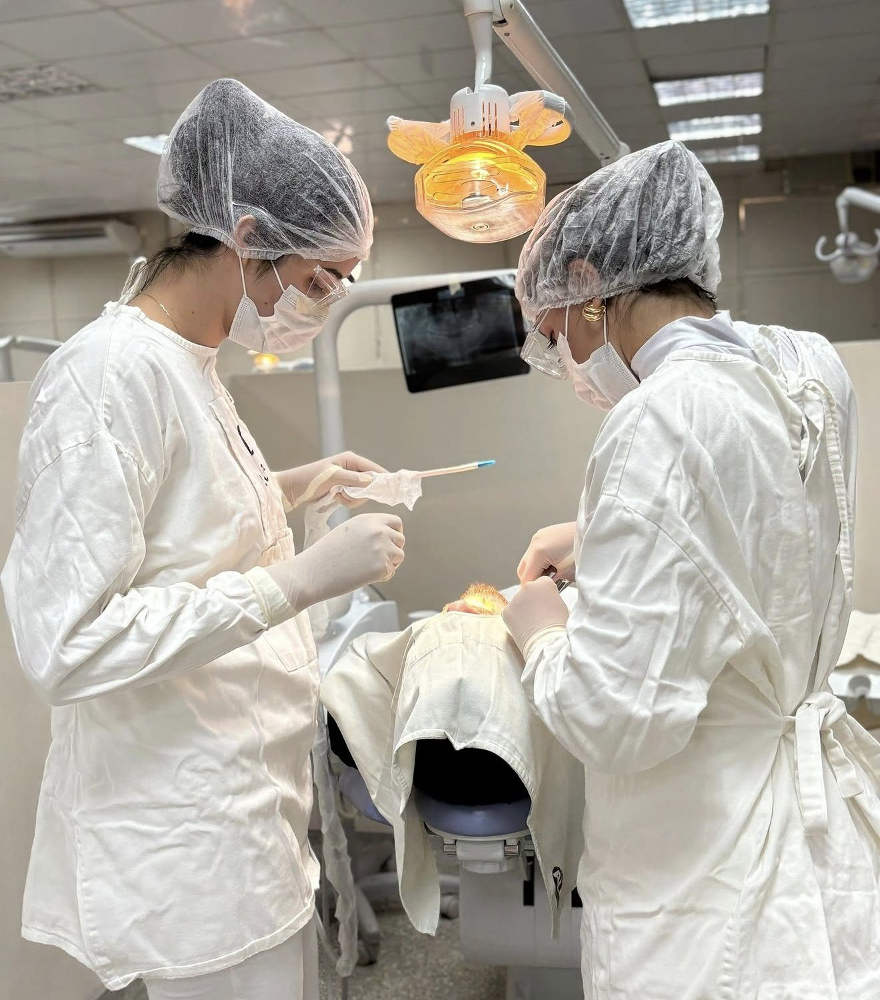

Rinomodelação
Ajuste do dorso e da ponta do nariz com ácido hialurônico, sem cortes, para um perfil mais harmônico.
Cirurgiã-dentista apaixonada por unir saúde, estética e naturalidade em cada atendimento.

A resposta deve vir depois de uma boa avaliação. É comum chegar ao consultório já com o nome de um procedimento em mente — meu papel é olhar para o seu rosto como um todo e indicar só o que faz sentido para você.
Seu planejamento começa na consulta.
Resultados sutis, que acompanham os seus traços sem disputar atenção com eles. Cada protocolo é planejado de forma individual.
Ajuste do dorso e da ponta do nariz com ácido hialurônico, sem cortes, para um perfil mais harmônico.
Contorno, hidratação e volume na medida certa — lábios que parecem que sempre foram seus.
Estimula a produção natural de colágeno para melhorar firmeza e qualidade da pele ao longo do tempo.
Suaviza linhas de expressão preservando a sua expressividade. Também indicada de forma preventiva, após avaliação.
Reposição de volume e definição de contornos — mandíbula, mento e malar — com planejamento discreto.
Cirurgia com técnica, segurança e cuidado no pós-operatório, com a base da formação em Bucomaxilofacial.

Tão sutil que parece que sempre foi seu.
“Dra., quero fazer, mas quero que fique discreto.” Pode ficar tranquila: esse pedido já faz parte do meu planejamento. A ideia é realçar o que é seu — nunca transformar você em outra pessoa.
Quero minha avaliaçãoImagem de paciente real, publicada com autorização. Os resultados variam de pessoa para pessoa e dependem de avaliação individual.
Conversa sobre o que te incomoda e análise completa da face, da pele e da sua saúde.
Indicação do que realmente faz sentido para você, com etapas, cuidados e expectativas claras.
Realizado com técnica, produtos regularizados e todo o cuidado com o seu conforto.
Retorno e suporte no pós para garantir um resultado seguro e natural.

Minha paixão pela odontologia sempre esteve ligada ao cuidado, à autoestima e ao bem-estar das pessoas.
Hoje, sigo me aperfeiçoando constantemente, realizando minhas especializações em Harmonização Facial e Cirurgia e Traumatologia Bucomaxilofacial.
Por aqui, você encontra atendimento com muito carinho e compromisso com cada paciente.
Não é esse o objetivo. O planejamento parte dos seus traços e busca um resultado que acompanhe o seu rosto, sem exageros. Naturalidade é prioridade em todos os procedimentos.
A idade, sozinha, não responde essa pergunta. O que define é a sua pele, a sua musculatura e a forma como você se expressa — por isso a indicação vem sempre depois da avaliação.
Preenchimento, bioestimulador ou toxina botulínica? A resposta depende do que causa o incômodo. Na consulta, analisamos juntas e montamos o seu plano.
O procedimento é feito com anestesia local e você recebe todas as orientações de pós-operatório para uma recuperação tranquila.
É só chamar no WhatsApp. Respondemos com os horários disponíveis e as orientações para a sua primeira consulta.
Agende sua avaliação e receba um plano pensado para o seu rosto, com saúde, estética e naturalidade.
Agendar pelo WhatsApp